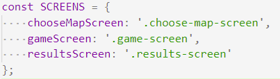
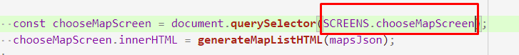
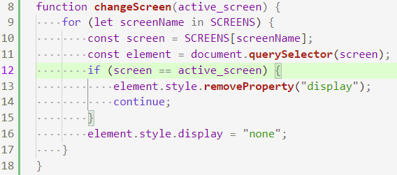
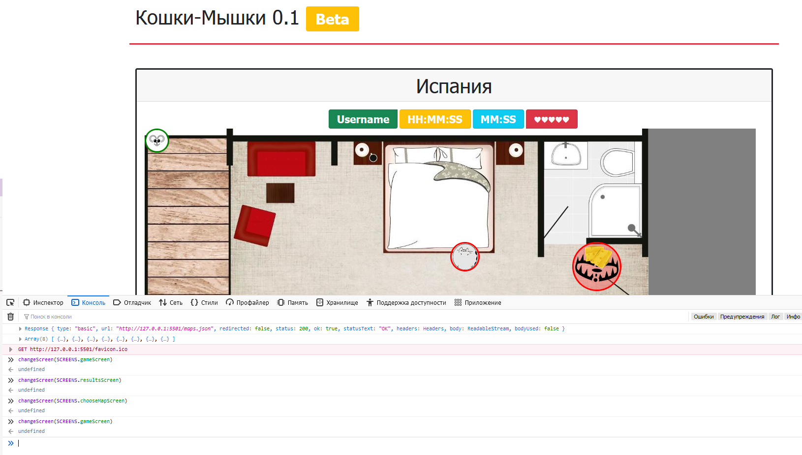
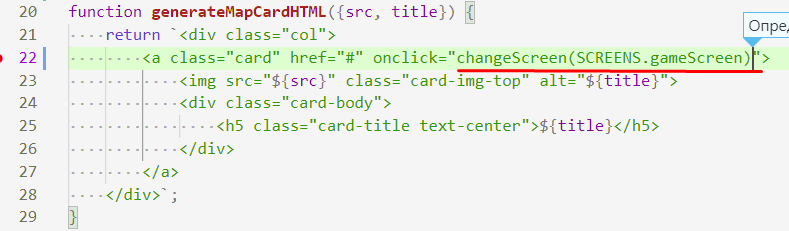

202202181614 Переключение с Экрана Выбора Карты на Экран Игры
- Для начала обозначим классы экранов, по которым мы будем искать экраны, в виде констант:

- Теперь стоит их использовать даже в коде предыдущего шага:

- Напишем функцию, которая будет принимать в виде аргумента строку-активный экран. Включать активный, и отключать неактивный:

- Проверяем:

- Теперь сделаем так, чтобы при клике на карту мы переходили на экран Игры:

- Не забываем перепроверить.